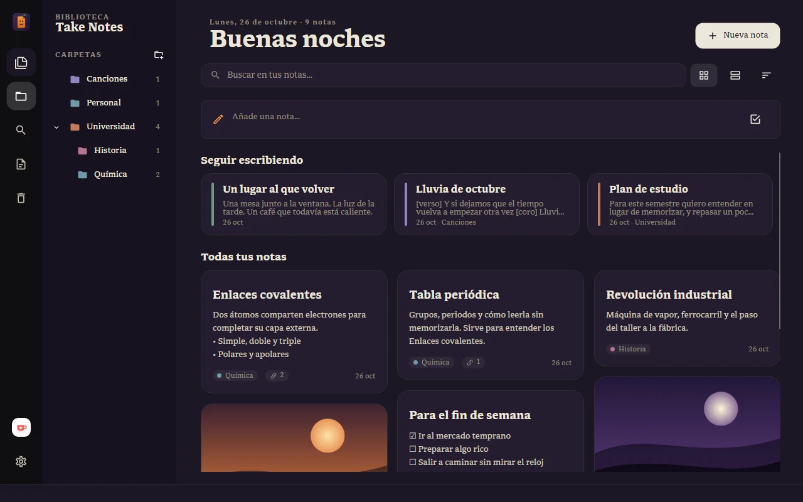

Personalizar
Todo esto está en Configuración, el engranaje abajo en la barra de íconos. Los cambios se aplican al momento.
Apariencia
- Tema: claro, oscuro o el mismo del sistema.
- Color de acento: el color de los detalles, los enlaces y los botones activos.
- Animaciones: puedes apagarlas si prefieres una interfaz quieta.
Idioma
Take Notes está en español, inglés y portugués, o puede seguir el idioma de tu computador. El idioma cambia los menús y la ayuda, nunca el texto de tus notas.
Accesibilidad
- Tamaño de la interfaz: de 90 a 150 %. Agranda toda la ventana, no solo el texto.
- Alto contraste: más diferencia entre el texto, los bordes y el fondo.
- Foco más visible: un borde de color en el control activo al moverte con Tab.
- Reducir movimiento: quita las animaciones.
El tamaño del texto del editor se elige aparte, en Configuración › Editor.

Temas de temporada
En fechas especiales Take Notes se viste por unos días y después vuelve solo a la normalidad. En Halloween, durante octubre y hasta el 2 de noviembre:
- el acento pasa a color calabaza (si elegiste otro color, se respeta);
- en el modo oscuro, el papel toma un tono morado de medianoche;
- el logo es una nota con cara de calabaza, y la biblioteca vacía tiene murciélagos;
- suenan sonidos cortos y suaves al crear una nota o mandarla a la papelera.
Puedes apagar el tema en Configuración › Apariencia › Temas de temporada, o solo los sonidos en Sonidos de temporada. En el teléfono, los dos interruptores están en Cuenta.
